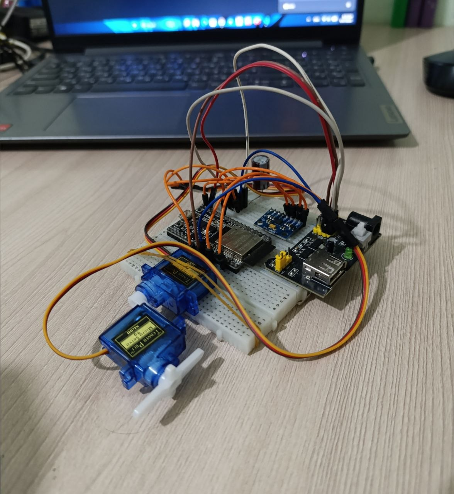

This project demonstrates a 2-axis stabilization system using ESP32 and MPU6050. The system reads motion data and controls two servo motors to stabilize movement in both roll (left-right) and pitch (forward-backward) directions.
The MPU6050 sensor measures acceleration on X and Y axes. The ESP32 calculates roll and pitch angles using these values. Based on the angle, two servo motors adjust their position to keep the system stable. One servo controls left-right movement, and the other controls forward-backward tilt.
#include <Wire.h>
#include <MPU6050.h>
#include <ESP32Servo.h>
MPU6050 mpu;
Servo servoRoll;
Servo servoPitch;
float roll, pitch;
void setup() {
Wire.begin(21, 22);
mpu.initialize();
servoRoll.attach(18);
servoPitch.attach(19);
}
void loop() {
int16_t ax, ay, az;
mpu.getAcceleration(&ax, &ay, &az);
roll = atan2(ay, az) * 180 / PI;
pitch = atan2(ax, az) * 180 / PI;
int rollPos = map(roll, -90, 90, 0, 180);
int pitchPos = map(pitch, -90, 90, 0, 180);
rollPos = constrain(rollPos, 0, 180);
pitchPos = constrain(pitchPos, 0, 180);
servoRoll.write(180 - rollPos);
servoPitch.write(180 - pitchPos);
delay(20);
}